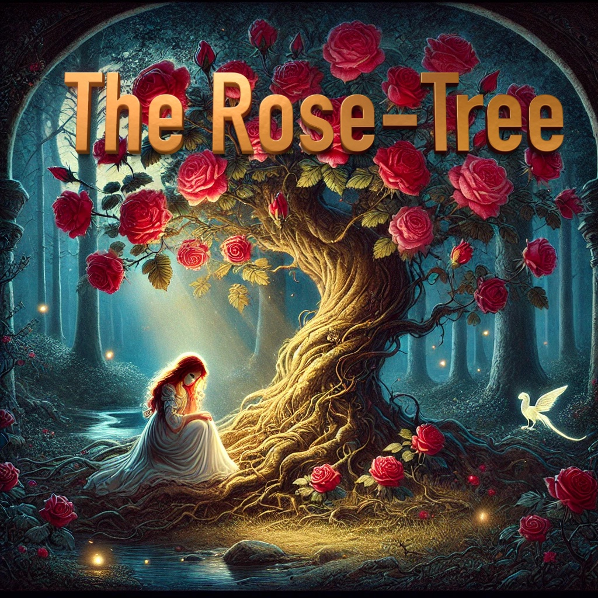

The Rose-Tree
Example 3
The Project Gutenberg eBook of English Fairy Tales compiled by Joseph Jacobs, a copyright-free collection of classic tales.

There was once upon a time a good man who had two children: a girl by a first wife, and a boy by the second. The girl was as white as milk, and her lips were like cherries. Her hair was like golden silk, and it hung to the ground. Her brother loved her dearly, but her wicked stepmother hated her. "Child," said the stepmother one day, "go to the grocer's shop and buy me a pound of candles." She gave her the money; and the little girl went, bought the candles, and started on her return. There was a stile to cross. She put down the candles whilst she got over the stile. Up came a dog and ran off with the candles.
She went back to the grocer's, and she got a second bunch. She came to the stile, set down the candles, and proceeded to climb over. Up came the dog and ran off with the candles.
She went again to the grocer's, and she got a third bunch; and just the same happened. Then she came to her stepmother crying, for she had spent all the money and had lost three bunches of candles.
The stepmother was angry, but she pretended not to mind the loss. She said to the child: "Come, lay your head on my lap that I may comb your hair." So the little one laid her head in the woman's lap, who proceeded to comb the yellow silken hair. And when she combed the hair fell over her knees, and rolled right down to the ground.
Then the stepmother hated her more for the beauty of her hair; so she said to her, "I cannot part your hair on my knee, fetch a billet of wood." So she fetched it. Then said the stepmother, "I cannot part your hair with a comb, fetch me an axe." So she fetched it.
"Now," said the wicked woman, "lay your head down on the billet whilst I part your hair."
Well! she laid down her little golden head without fear; and whist! down came the axe, and it was off. So the mother wiped the axe and laughed.
Then she took the heart and liver of the little girl, and she stewed them and brought them into the house for supper. The husband tasted them and shook his head. He said they tasted very strangely. She gave some to the little boy, but he would not eat. She tried to force him, but he refused, and ran out into the garden, and took up his little sister, and put her in a box, and buried the box under a rose-tree; and every day he went to the tree and wept, till his tears ran down on the box.
One day the rose-tree flowered. It was spring, and there among the flowers was a white bird; and it sang, and sang, and sang like an angel out of heaven. Away it flew, and it went to a cobbler's shop, and perched itself on a tree hard by; and thus it sang,
"My wicked mother slew me, My dear father ate me, My little brother whom I love Sits below, and I sing above Stick, stock, stone dead."
"Sing again that beautiful song," asked the shoemaker. "If you will first give me those little red shoes you are making." The cobbler gave the shoes, and the bird sang the song; then flew to a tree in front of a watchmaker's, and sang:
"My wicked mother slew me, My dear father ate me, My little brother whom I love Sits below, and I sing above Stick, stock, stone dead."
"Oh, the beautiful song! sing it again, sweet bird," asked the watchmaker. "If you will give me first that gold watch and chain in your hand." The jeweller gave the watch and chain. The bird took it in one foot, the shoes in the other, and, after having repeated the song, flew away to where three millers were picking a millstone. The bird perched on a tree and sang:
"My wicked mother slew me, My dear father ate me, My little brother whom I love Sits below, and I sing above Stick!"
Then one of the men put down his tool and looked up from his work,
"Stock!"
Then the second miller's man laid aside his tool and looked up,
"Stone!"
Then the third miller's man laid down his tool and looked up,
"Dead!"
Then all three cried out with one voice: "Oh, what a beautiful song! Sing it, sweet bird, again." "If you will put the millstone round my neck," said the bird. The men did what the bird wanted and away to the tree it flew with the millstone round its neck, the red shoes in one foot, and the gold watch and chain in the other. It sang the song and then flew home. It rattled the millstone against the eaves of the house, and the stepmother said: "It thunders." Then the little boy ran out to see the thunder, and down dropped the red shoes at his feet. It rattled the millstone against the eaves of the house once more, and the stepmother said again: "It thunders." Then the father ran out and down fell the chain about his neck.
In ran father and son, laughing and saying, "See, what fine things the thunder has brought us!" Then the bird rattled the millstone against the eaves of the house a third time; and the stepmother said: "It thunders again, perhaps the thunder has brought something for me," and she ran out; but the moment she stepped outside the door, down fell the millstone on her head; and so she died.